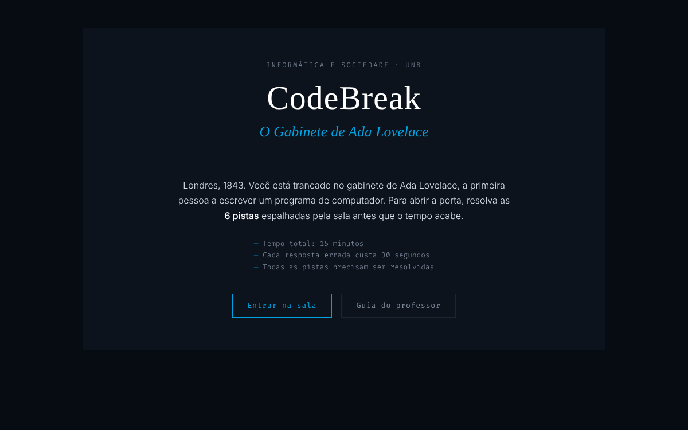
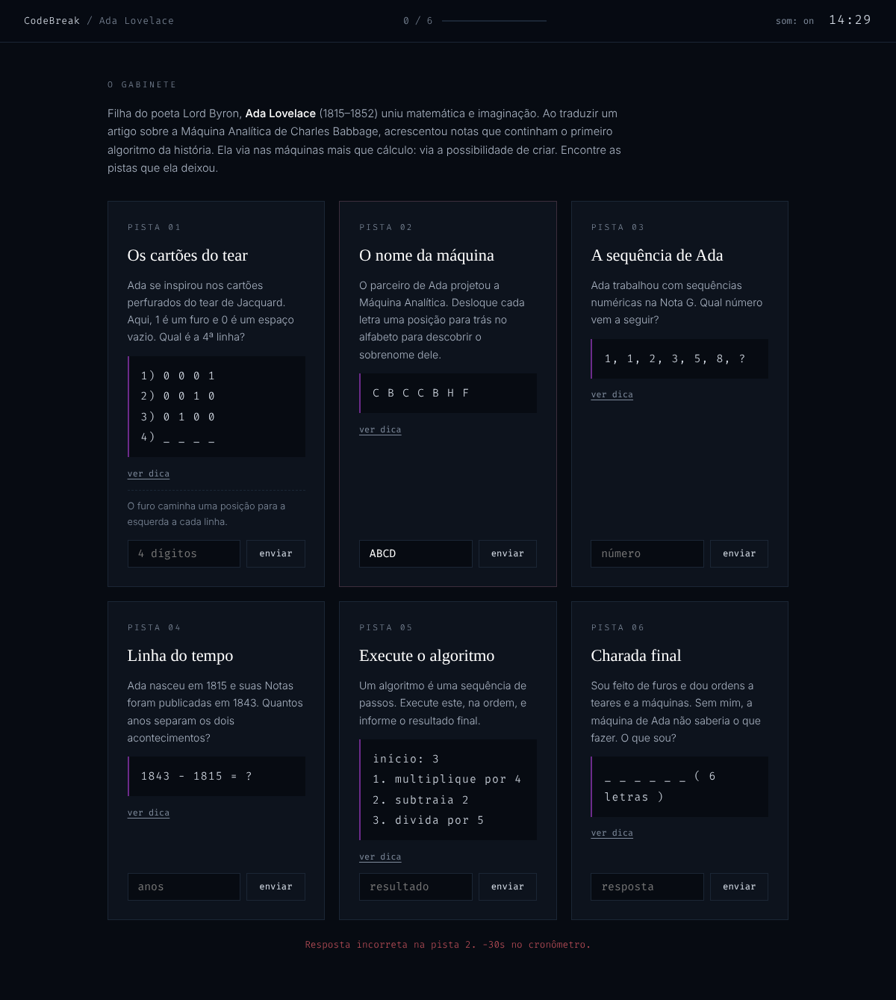
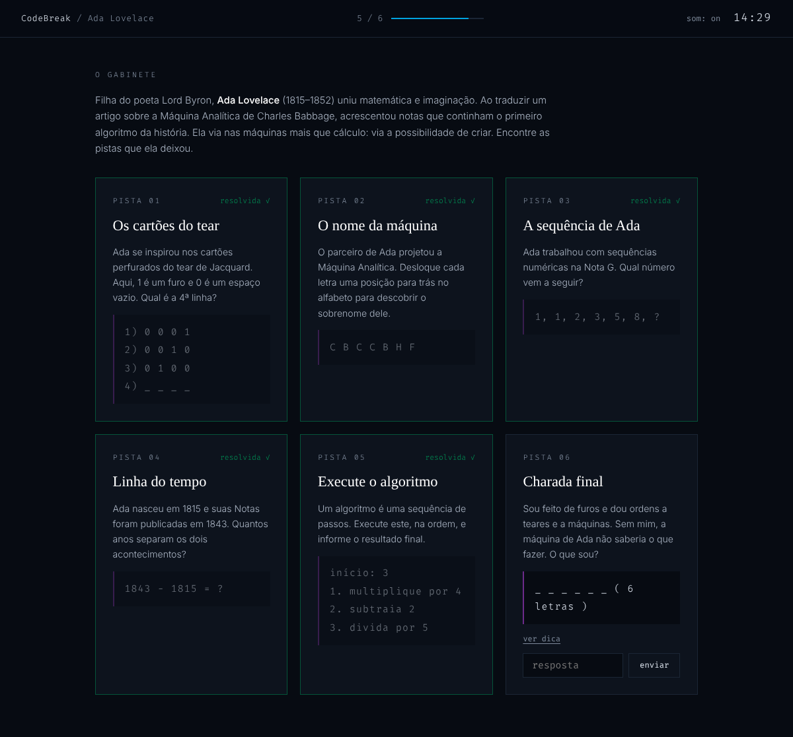
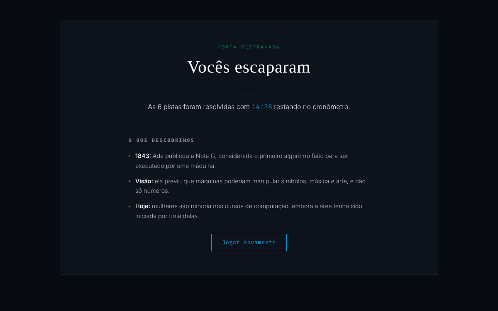
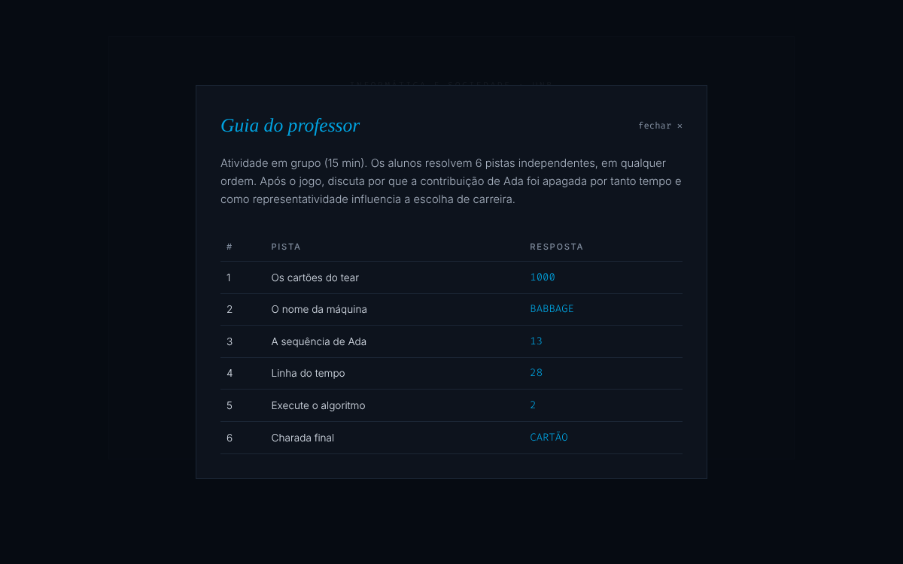

Guia visual do escape room digital para turmas de Ensino Médio: uma única sala temática, seis pistas a decifrar e uma conversa sobre a presença feminina na tecnologia.
O CodeBreak é um jogo de enigmas em navegador, aplicado em equipes. Os estudantes ficam trancados no gabinete de Ada Lovelace (Londres, 1843) e, para abrir a porta, precisam resolver todas as 6 pistas em 15 minutos. Cada pista une um raciocínio de computação a um fato da história de Ada, a primeira pessoa a escrever um programa para uma máquina.
Todas as pistas ficam visíveis ao mesmo tempo e podem ser resolvidas em qualquer ordem, o que favorece a divisão de tarefas na equipe.
O cronômetro regressivo perde 30 segundos a cada resposta incorreta. Cada pista tem uma dica opcional para que nenhuma equipe fique travada.
O símbolo une colchetes de código a um furo central, em referência aos cartões perfurados que Ada usou como inspiração. O desenho é fino e contido: um quadrado de cantos suaves, dois colchetes em ciano e um ponto. A assinatura combina o nome em serifa elegante com o subtítulo em caixa alta espaçada.
Títulos e subtítulos. Dá o toque elegante; usar em itálico nos subtítulos.
Textos narrativos, instruções e enunciados das pistas.
Cronômetro, enigmas, campos de resposta e rótulos.
A paleta é sóbria: um fundo azul-marinho profundo, superfícies levemente mais claras e o ciano como único destaque. Roxo e verde aparecem apenas como apoio, em detalhes pequenos.
O vermelho discreto #C0505A é reservado a erros e ao cronômetro nos últimos 60 segundos.

| Elemento | Estilo | Uso no jogo |
|---|---|---|
| Barra superior | Fina, com borda inferior | Nome da sala, progresso (n / 6) e cronômetro regressivo de 15 minutos. |
| Cartão de pista | Borda 1px + filete roxo | Título, enunciado, enigma em Fira Code, dica e campo de resposta. |
| Pista resolvida | Borda verde | Bloqueia o campo e esmaece o enigma, sem animações chamativas. |
A sala apresenta um texto breve sobre Ada Lovelace (1815–1852), filha do poeta Lord Byron, e a grade com as seis pistas. Quando todas ganham a borda verde, a porta se abre e a tela de vitória aparece.

Cada pista tem um ícone de traço de 1,5 px, em ciano, usado em materiais impressos e no kit desplugado.
| Ícone | Pista | Conceito de computação e fato histórico |
|---|---|---|
| 01 · Cartões do tear | Padrões binários; cartões perfurados de Jacquard inspiraram Ada. | |
| 02 · Nome da máquina | Cifra de substituição; Charles Babbage e a Máquina Analítica. | |
| 03 · Sequência de Ada | Reconhecimento de padrões; a Nota G trabalhava com sequências numéricas. | |
| 04 · Linha do tempo | Cálculo com datas: 1815 (nascimento) e 1843 (publicação das Notas). | |
| 05 · Execute o algoritmo | Algoritmo como sequência de passos; o primeiro programa da história. | |
| 06 · Charada final | Interpretação de enunciado; retoma o cartão perfurado da Pista 01. |


Se o tempo chegar a zero antes de todas as pistas serem resolvidas, uma tela simples em tom vermelho discreto convida a equipe a tentar de novo.

| Minimalismo | Poucos elementos por tela, bordas de 1 px, sem neon, sombras fortes ou animações de destaque. |
| Elegância | Títulos em serifa, bastante espaço em branco e texto em tons suaves. |
| Acessibilidade | Contraste alto entre texto e fundo, rótulos nos campos e navegação por teclado. |
| Inclusão | Evitar a polarização rosa/azul; a narrativa valoriza Ada sem reduzir a computação a um único perfil. |